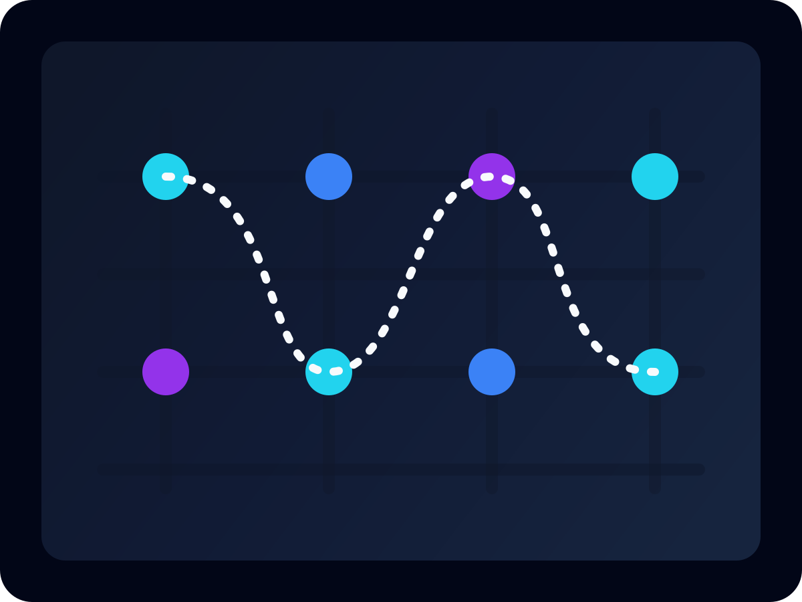
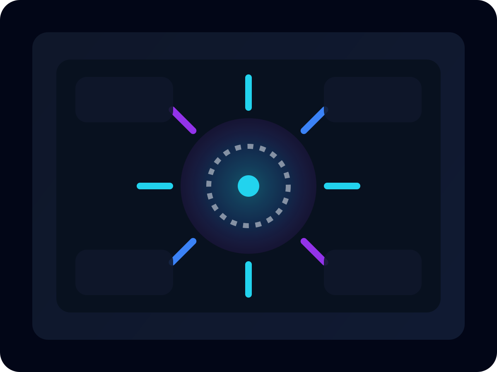

Robotics x Artificial Intelligence
08+
End-to-end builds
05
AI prototype tracks
03
Robotics focus areas
Designing intelligent machines and software with a product mindset.
I'm Maneth Silva, an undergraduate focused on robotics, embedded systems, computer vision, and applied machine learning. I build clean interfaces, autonomous workflows, and research-driven prototypes that feel production ready.
Live Build Stack
Active
About Me
Engineering robotics and AI systems with clear thinking and clean execution.
I'm a robotics and artificial intelligence undergraduate who enjoys turning ambitious ideas into disciplined, testable systems. My work sits at the intersection of hardware, software, perception, and interface design.
I care about autonomous behavior, machine perception, model experimentation, and the kind of software polish that makes technical work easier to trust, explain, and scale.
Embedded robotics, computer vision, control systems, and applied AI.
Minimal interfaces, strong technical fundamentals, and measurable iteration.
Build intelligent systems that move from prototype to practical deployment.
Skills
Technical depth across robotics, AI, and modern software delivery.
Programming
Python, JavaScript, C++, MATLAB, SQL
Robotics
ROS, sensor integration, motion planning, control logic
AI / ML
Computer vision, deep learning, model evaluation, data pipelines
Tooling
Git, Linux, Figma, embedded debugging, rapid prototyping
Selected Projects
Large-format project cards designed to showcase technical detail and product thinking.

Swarm Coordination Simulator
Multi-agent coordination environment for evaluating collective robot behavior, obstacle negotiation, and decentralized task allocation in warehouse-like spaces.
Vision-Based Safety Monitor
Real-time object detection and safety zone monitoring pipeline designed for lab environments, pairing efficient inference with a clean operator dashboard.

Autonomous Drone Mission Panel
Mission-planning interface and telemetry visualization for route testing, waypoint control, and high-level autonomous mission review with a startup-inspired UI.
Robotics Projects
Systems work focused on autonomy, sensing, motion, and real-world control.
Robotic Arm Sorting Cell
Pick-and-place workflow using sensor feedback, actuator control, and object classification logic for repeatable sorting tasks.
Line Following Rover
Embedded controller tuned for stable path tracking, sensor fusion, and obstacle interruption handling under varied lighting conditions.
SLAM Prototype Study
Mapping and localization experiments evaluating environment reconstruction, pose estimation, and navigation consistency in constrained indoor spaces.
AI Experiments
Applied machine learning exploration with strong emphasis on perception and iteration.
Gesture Recognition Pipeline
Hand pose classification for human-machine interaction using lightweight models and temporal smoothing.
Predictive Maintenance Signals
Modeling equipment behavior with anomaly scoring to identify failure patterns before system downtime.
Edge Vision Benchmarking
Latency and accuracy comparisons across compact inference pipelines for embedded deployment targets.
Education
Academic foundation in robotics, AI, systems engineering, and computational problem solving.
Degree
BSc in Robotics and Artificial Intelligence
Institution
University of Hertfordshire
Focus Areas
Autonomous systems, machine learning, embedded systems, control, computer vision
Status
Undergraduate Student
Contact
Open to robotics, AI, and software collaboration opportunities.
If you're building something ambitious in autonomy, machine intelligence, or modern product engineering, I'd be interested in hearing about it.